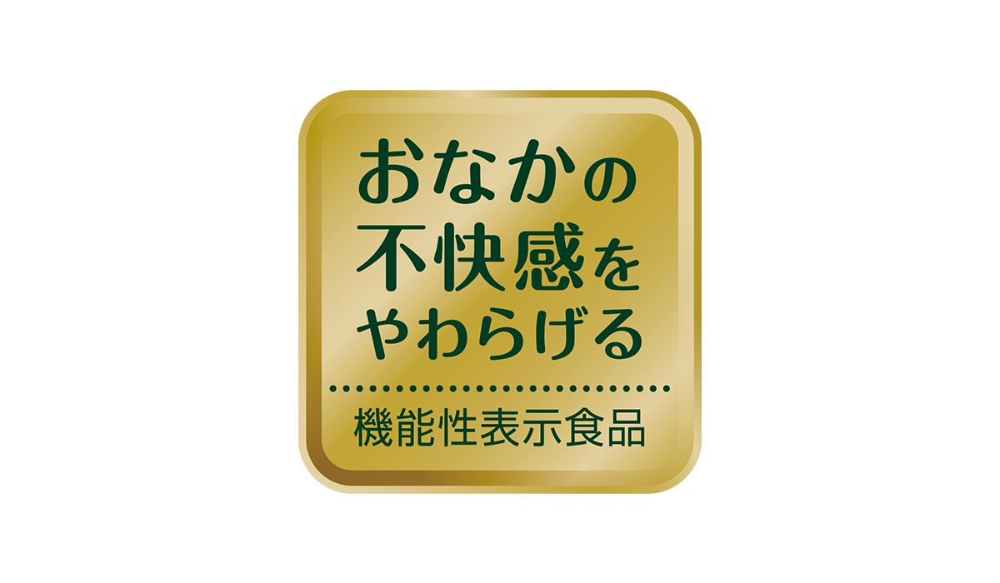

「お腹の不快感をやわらげる」機能性表示食品であるダノンビオ*。このヨーグルトのひと匙(さじ)には、お客様へのさまざまなメッセージが込められています。生きたまま腸に届くビフィズス菌BE80の働き、それを伝えるために機能性表示を選んだ理由。そして何より、おいしく健やかな毎日をお届けしたいと考える、つくり手の想い。ダノンビオの小さなひと匙(さじ)に込められたメッセージを、日本工場で商品開発に携わり「菌と日々対話している」と話す西田開発員が紐解きます。
死んでしまうビフィズス菌を、生きて腸まで届けたい。 その想いで探し当てたのが、BE80でした。
「生きたまま腸まで届くビフィズス菌をヨーグルトに入れてお客様に届ける」ことがダノンビオ開発時のミッションでした。ビフィズス菌というものは、動物由来や腸内など、自然界に多様に存在します。その中で、発酵乳から分離して発見されたBE80は、胃酸や小腸の殺菌力に耐え、しかも工場での生産に向いているという、私たちが探し求めていた、ヨーグルトに向いている菌だったのです。 選び抜かれたBE80とダノンビオは、自然界のなかで運命的な出会いを果たしてここに存在しているのです。
「生きたまま腸まで届く」ことを、高生存といいます。BE80は、胃と小腸で殺菌力がかかるいわゆる消化間で生き残ることができる高生存ビフィズス菌です。これには私たちがしっかりと調査し論文にも仕上げた科学的な根拠があります。 市販されている商品で同様の有用性をうたうものもいくつかありますが、ダノンビオほど綿密に調べた商品はないかもしれないと言えるほど、BE80の高生存性は科学的に実証されたものです。また、高生存がおなかの不快感をやわらげることと密接に関わっていることも、臨床試験結果に示されています。
BE80は大腸まで届くと、代謝という働きをします。大腸の中で栄養をとってエネルギーを出し、いらないものを排出するんですね。有用物質を腸の中で維持する働きをして、私たちの腸の健康状態を保ってくれるんです。それがBE80の存在価値の高さ。この有用性を十分活かすため、ダノンビオはBE80を育て上げる乳酸菌との５菌ブレンドで製造しています。
ダノンビオ*で得られる「実感」を、ぜひあなたに。 健康なのに、おなかの不快感がある方へ。

ダノンビオは1980年代に開発したときから「健康にいい食品をお客様にお届けしたい」という意義で存在する商品です。このことをお客様に言葉で直接的にお伝えする表示ができる、ということで「おなかの不快感をやわらげる」機能をダノンビオ(プレーン・加糖)に表示しました。この機能性表示を、今後ダノンビオのラインナップにもより増やしていきたいと考えています。
おなかの不快感とは、ガス、張り、ゴロゴロ感、痛みまでいかない違和感など、基本的に健康な人が下腹部に覚える不快感のことです。その感じ方や頻度は千差万別ですが、おなかに不快感のある日本人女性が多いというデータがあります。おなかの調子はつい軽くとらえがちですが、不快だと一日気分が上がらないものです。スッキリすることで一日を調子よく気分も軽く過ごしたい、ダノンビオ*はそんな方に食べていただきたいヨーグルト。BE80は高生存で空腹時の胃酸にも強いため、食べるタイミングは空腹時でも食後でも、いつでも構いません。
フレッシュで安全でおいしい、しかも機能的。
そんなダノンビオ*を、毎日お届けしたいから。
自然な食品であるヨーグルトが愛され、日本でも市場が広がっているのは素晴らしいことだと喜ばしく思っています。その中でもダノンビオ*には、このヨーグルトならではの強みがあります。お話ししてきたように、お腹の不快感をやわらげる機能をお客様自身が実感できる商品であること。そして、機能性を支える科学的根拠があり、作用基準を高いレベルで持ち得ていることです。機能性表示でお客様に実感が広がり、ダノンビオ*がますますお役に立てることを今後期待しています。
ダノンビオは世界ブランドのヨーグルトで、世界中で同じ成分・同じ菌の組合せで作っていますが、日本は日本の工場で生産しています。その理由は、よりフレッシュな状態で、安全安心・おいしいダノンビオをお客様にお届けしたいからです。 また、日本の食文化に合わせ、はちみつジンジャー、さくら、スイカなどといった日本独自フレーバーの開発で、四季を感じる日本ならではの楽しみも大切にしています。
私たち開発チームの想いはただ一つ、おいしくてお客様に愛されるヨーグルトをお届けしたいということ。栄養と機能に優れた商品を、お客様のくらしに継続して取り入れていただけたら、と願っています。そのためにすべき大きな仕事は、菌を理解することと考えています。菌数やＰＨ、におい、テクスチャーなど、菌たちが発する言葉にならないシグナルの数々を読み取り、まるで菌と対話するつもりで日々ダノンビオを作っています。 ぜひ召し上がるとき、軽くかき混ぜてからスプーンをすくってみてください。 こんもりとなめらかで艶のあるひと匙(さじ)のダノンビオには、私たちのそんな想いがつまっています。
BE80 届出表示：本品にはビフィズス菌BE80が含まれ、おなかの不快感※をやわらげることが報告されています。※おなかの不快感とは、健康な人の日常生活でみられる下部消化管における過剰なガスの発生とおなかの張り、ゴロゴロ感や違和感のことです。食生活は、主食、主菜、副菜を基本に、食事のバランスを。本品は、事業者の責任において特定の保健の目的が期待できる旨を表示するものとして、消費者庁長官に届け出されたものです。ただし、特定保健用食品と異なり、消費者庁長官による個別審査を受けたものではありません。 摂取上の注意：●本品は多量摂取により疾病が治癒したり、より健康が増進するものではありません。●本品は、疾病の診断、治療、予防を目的としたものではありません。●本品は、疾病に罹患している者、未成年者、妊産婦（妊娠を計画している者を含む。）及び授乳婦を対象に開発された食品ではありません。●疾病に罹患している場合は医師に、医薬品を服用している場合は医師、薬剤師に相談してください。●体調に異変を感じた際は、速やかに摂取を中止し、医師に相談してください。●一日あたりの摂取目安量：2カップ（150g） 機能性関与成分名：●ビフィズス菌BE80（Bifidodacterium Lactis CNCM I-2494）含有量：89億個
＊ダノンビオ プレーン・加糖です。